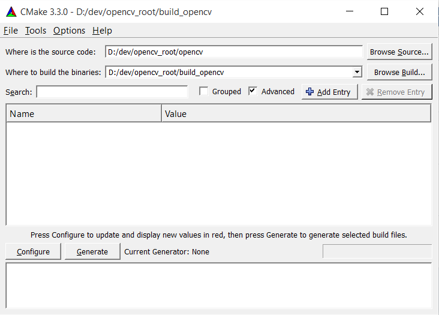
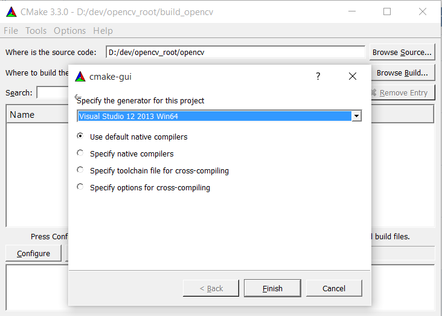
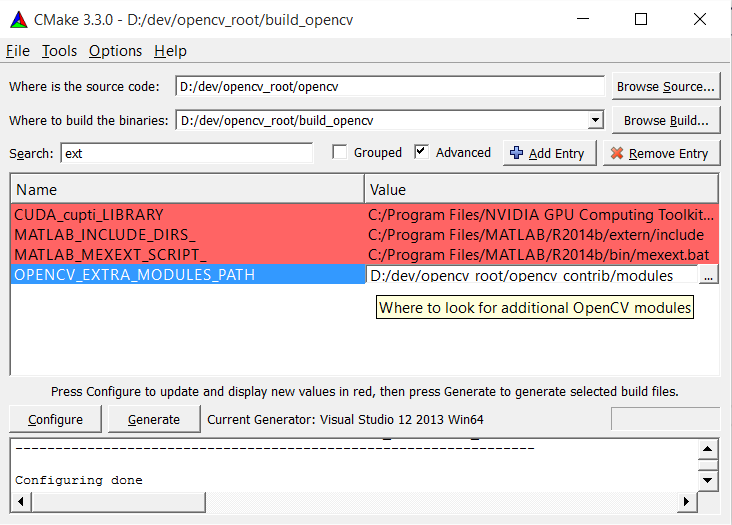
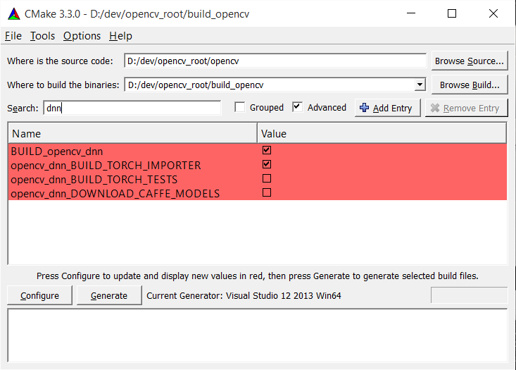

Introduction
opencv_dnn module is placed in the secondary opencv_contrib repository, which isn't distributed in binary form, therefore you need to build it manually.
To do this you need to have installed: CMake, git, and build system (gcc with make for Linux or MS Visual Studio for Windows)
Steps
- Make any directory, for example opencv_root
- Clone opencv and opencv_contrib repos to the opencv_root. You can do it in terminal like here:
2 git clone https://github.com/opencv/opencv
3 git clone https://github.com/opencv/opencv_contrib
- Run [CMake-gui] and set source and build directories:
- Set source code directory to opencv_root/opencv;
- Set binaries directory, for example, to opencv_root/build_opencv. This directory will contain built libraries.

- Configure opencv:
- press Configure;
- choose the preferred project generator (Makefiles for Linux, MS Visual Studio for Windows);
- also you can set many opencv build options, for more details see Installation in Linux.

- In the appeared list of build parameters find parameter
OPENCV_EXTRA_MODULES_PATH and set it to the opencv_root/opencv_contrib.

- Configure the project again, and set build options of dnn module:
BUILD_opencv_dnn parameter must exist and be checked.- dnn module covers waste part of Caffe framework functionality. However, to load Caffe networks libprotobuf is required. You you can uncheck
BUILD_LIBPROTOBUF_FROM_SOURCES flag to try use protobuf installed in your system. Elsewise libpotobuf will be built from opencv sources.
- You can additionally check
opencv_dnn_BUILD_TORCH_IMPORTER parameter to build Torch7 importer. It allows you to use networks, generated by Torch7.nn module.

- Press Configure and Generate.
- Build the generated project:
- If Makefiles generator on Unix was used, run the following in terminal:
1 cd opencv_root/build_opencv
- If MS Visual Studio generator was used, then open OpenCV.sln from opencv_root/build_opencv folder in the Visual Studio, and build it by choosing Build -> Build Solution menu or using F7 short-cut.
- Now you can build own program by using libraries were built into opencv_root/build_opencv/lib. See the following tutorials to learn how to create a program using OpenCV:

 1.8.11
1.8.11